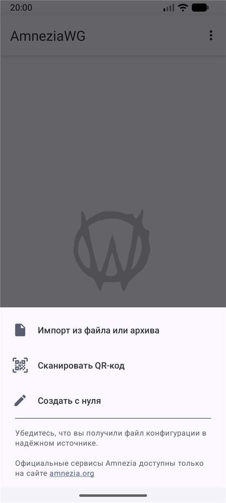
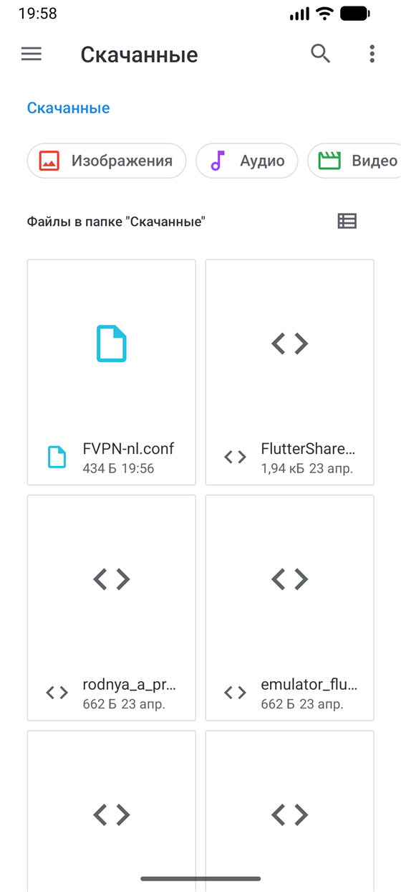
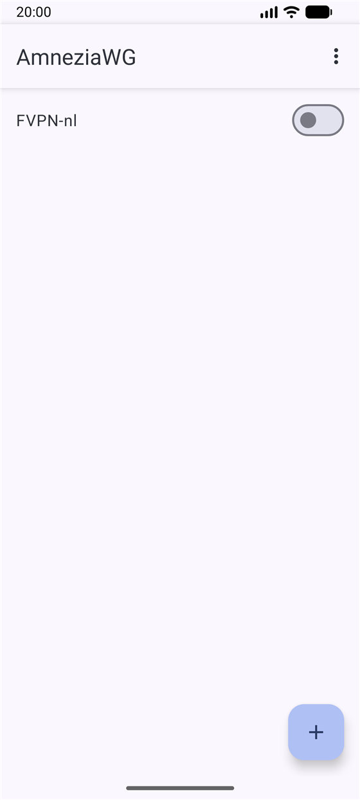
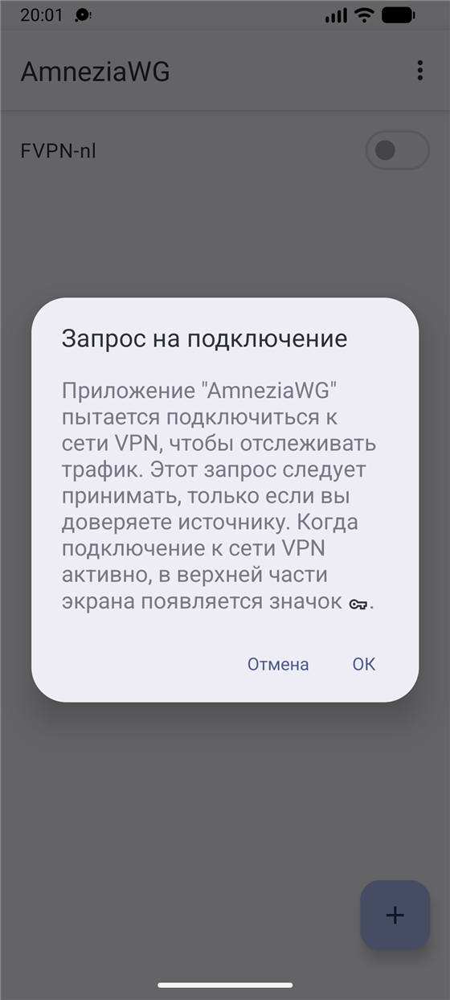

Подключим по шагам
Нужно один раз установить приложение и добавить в него скачанный файл.
1. Установите именно AmneziaWG
Название должно совпадать: AmneziaWG. Для этой инструкции выбирайте его, а не WireGuard или Amnezia VPN.
Затем выберите работающий сервер и нажмите «Скачать профиль». Запомните его имя: например, FVPN-nl-a12b34.conf.
2. Добавьте файл в приложение
На телефоне Android
Картинки показывают нужные пункты меню. Внешний вид может немного отличаться в вашей версии.
Откройте AmneziaWG и нажмите «+»
Выберите «Импорт из файла или архива». Не «Создать с нуля».

Нужен первый пункт меню. Найдите скачанный файл
В окне выбора откройте «Скачанные» / «Загрузки». Если папки не видно, нажмите ☰ слева сверху. Нажмите файл, имя которого начинается с FVPN и заканчивается на .conf.

Выбирайте файл профиля, не картинку и не установщик. Включите переключатель рядом с профилем
Профиль появится в списке. Нажмите его переключатель.

Один включённый VPN за раз. Разрешите VPN-подключение
Если Android спросит разрешение, нажмите «ОК». Затем откройте браузер и проверьте, загружается ли сайт.

Это обычный системный запрос при первом подключении.
На iPhone
- В Safari нажмите «Скачать профиль» → «Загрузить». Файл обычно попадает в приложение «Файлы» → «Обзор» → «Загрузки» (в iCloud Drive или «На iPhone»).
- Откройте AmneziaWG. Нажмите «+» → «Импорт из файла или архива».
- Выберите скачанный файл FVPN… .conf. Если приложение попросит название, введите FVPN-nl и сохраните.
- Включите переключатель у профиля. На запрос добавления VPN-конфигурации нажмите «Разрешить» и подтвердите кодом телефона или Face ID.
Не видите файл? Откройте «Файлы», найдите его в «Загрузках», удерживайте → «Поделиться» и посмотрите, доступна ли AmneziaWG.
На компьютере Windows
- По ссылке выше скачайте установщик AmneziaWG. Для обычного современного ПК выберите вариант amd64 / x64. Запустите его и завершите установку.
- В AmneziaWG внизу слева нажмите «Добавить туннель» (или стрелку рядом) → «Импорт туннелей из файла…».
- В окне выбора слева нажмите «Загрузки». Выберите скачанный FVPN… .conf → «Открыть».
- Выберите появившийся профиль слева и нажмите «Подключить». Откройте браузер и проверьте интернет.
Файла не видно или приложение ругается на имя? Следующий раздел поможет.
Файл не добавляется?
Иногда браузер меняет имя. Например: FVPN-nl (1).conf или FVPN-nl.conf.txt. Нужен короткий вариант без пробелов и скобок, с .conf в конце.
Проще: сделайте исправленную копию здесь
Выберите свой скачанный файл. Мы исправим только имя — содержимое и ключи не меняются. Файл не отправляется на сервер.
Подойдут .conf и .conf.txt. Не выбирайте фотографию или установщик.
Потом добавьте новую копию в AmneziaWG по шагам выше. Исходный файл останется на месте.
Переименовать вручную · Android
- Откройте приложение «Файлы» или «Мои файлы» → «Загрузки» / «Скачанные».
- Нажмите на файл и удерживайте палец. Откройте меню ⋮ → «Переименовать». На некоторых телефонах меню находится рядом с самим файлом.
- Удалите старое имя целиком и напишите FVPN-nl.conf. Без пробелов, скобок и .txt.
- Нажмите «ОК» / «Сохранить». Если спрашивают о смене расширения — подтвердите. Вернитесь в AmneziaWG и импортируйте файл заново.
Если такое имя уже занято, используйте FVPN-nl-2.conf.
Переименовать вручную · iPhone
- Откройте «Файлы» → «Обзор» → «Загрузки» (в iCloud Drive или «На iPhone»).
- Удерживайте палец на файле → «Переименовать».
- Замените имя на FVPN-nl.conf. Если расширение показано отдельно, меняйте его с txt на conf; не добавляйте вторую точку .conf.
- Нажмите «Готово» и подтвердите смену расширения, если попросят. Снова выберите файл в AmneziaWG.
Если .txt не видно, удобнее сделать исправленную копию кнопкой выше.
Переименовать вручную · Windows
- Откройте «Проводник» — значок жёлтой папки. Слева выберите «Загрузки».
- Сначала покажите окончание файла. Windows 11: вверху «Просмотреть» / «Вид» → «Показать» → «Расширения имён файлов». Windows 10: вкладка «Вид» → поставьте галочку «Расширения имён файлов».
- Нажмите файл правой кнопкой мыши → «Переименовать». В Windows 11, если пункта не видно, откройте «Показать дополнительные параметры». Другой способ: один раз выделите файл и нажмите F2.
- Выделите всё имя вместе с окончанием (Ctrl+A) и введите FVPN-nl.conf. Нажмите Enter. На предупреждение «Изменить расширение?» ответьте «Да».
- В AmneziaWG повторите «Добавить туннель» → «Импорт туннелей из файла…» и выберите исправленный файл.
Если такое имя уже занято, используйте FVPN-nl-2.conf. Ничего внутри файла редактировать не нужно.
Без файлов · подключить телефон через QR
- На другом устройстве, например компьютере, откройте список серверов → нажмите «QR» у работающего сервера.
- На телефоне откройте AmneziaWG → «+» → «Сканировать QR-код». Разрешите камеру и наведите её на экран компьютера.
- Сохраните профиль и включите его. Если спросят разрешение на VPN, подтвердите.
С того же телефона сканировать собственный экран неудобно — используйте файл по инструкции выше.
VPN включён, а интернета нет?
Выключите профиль, выберите другой работающий сервер и добавьте его профиль. Надпись «Подключён» сама по себе не гарантирует соединение с сервером.
Не пересылайте свой файл и QR: внутри личный ключ. Если нужна помощь, пришлите название приложения и текст ошибки без содержимого профиля.
Помочь с подключением ↗